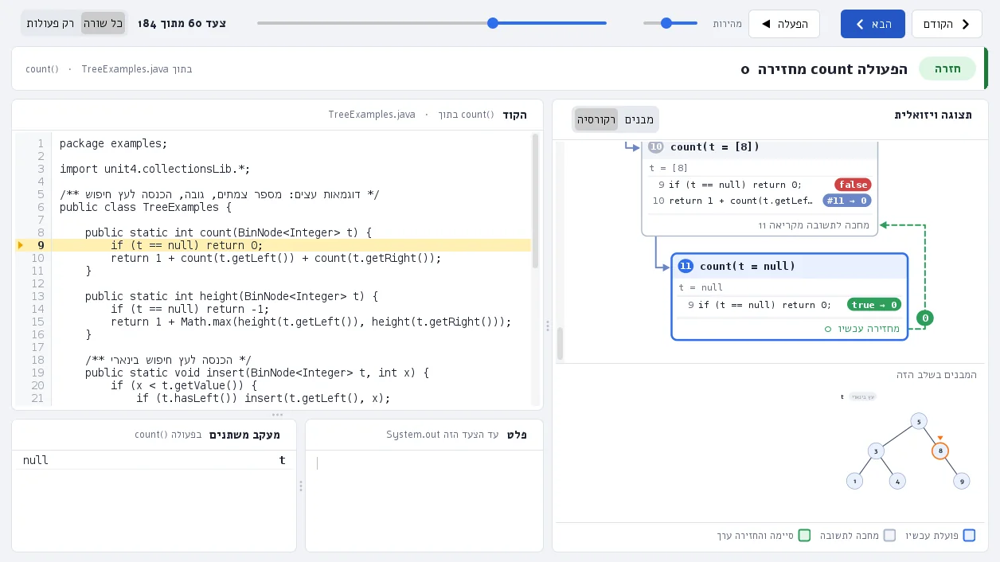
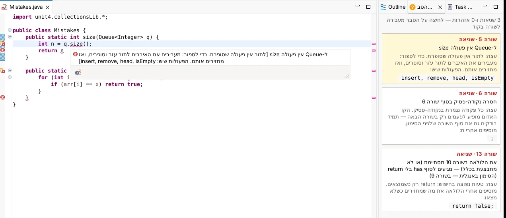
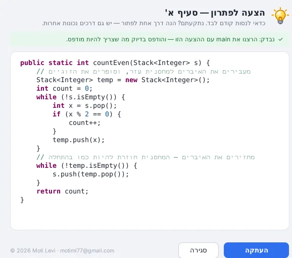
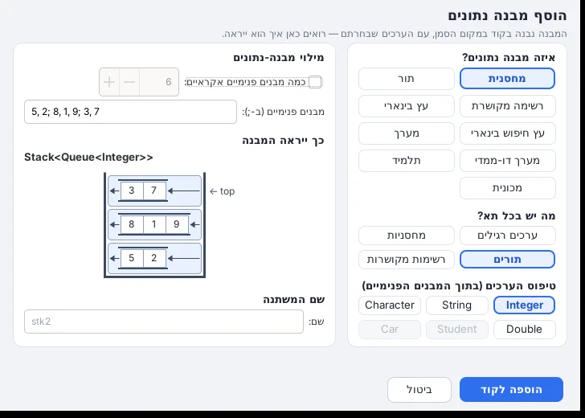

רואים מה
הקוד עושה
תוסף ל-Eclipse, ל-VS Code ול-Visual Studio שמריץ תרגיל במבני נתונים שורה אחרי שורה, ומצייר בזמן הריצה כל מחסנית, תור, רשימה ועץ.
הורדה ל-Windows קובץ התקנה אחד, 86 מגה. Java כבר בפנים, ואת Eclipse ההתקנה מוצאת לבד. יש לכם Mac או Linux?
שורה 1: הפעולה קיבלה מחסנית: 4 בראש, 9 בתחתית
זו הפעולה countEven מתרגיל אמיתי: היא סופרת את הזוגיים במחסנית בעזרת מחסנית עזר, ומחזירה את המחסנית למצבה. לוחצים על "הבא", או גוררים את הפס.
כל צעד על המסך
כותבים פעולה רגילה, לוחצים על הרצה ויזואלית בסרגל הכלים, ונפתח חלון עם השורה שרצה עכשיו (מסומנת בצהוב), כל המשתנים וערכיהם, והמבנים עצמם: מחסנית כקופסה שנפתחת למעלה, תור כצינור עם כניסה ויציאה, רשימה כחוליות עם חצים. הולכים קדימה ואחורה, מריצים לבד או קופצים לכל צעד.
- לולאות. לכל לולאה מונה משלה, וגם בלולאה בתוך לולאה רואים את i ואת j, באיזה סיבוב כל אחת ועל איזה תא במערך היא עומדת.
- רקורסיה. כל קריאה לפעולה בכרטיס נפרד: מה היא קיבלה, אילו תנאים יצאו true ואילו false, ומה היא החזירה.
- מבנה בתוך מבנה. תור של מחסניות, רשימה של תורים, עץ של מחסניות: כל מבנה פנימי מצויר בתוך התא שלו.
- מה שהתלמיד כתב. מערכים, מחרוזות ומחלקות חדשות (Student, Car, או כל מחלקה אחרת) מוצגים עם התכונות שלהם.

שגיאה? הסבר בעברית
ליד כל שגיאה של הקומפיילר מופיע משפט בעברית שאומר מה לא בסדר, בשורה שבה הבעיה באמת נמצאת, ועצה קצרה איך מתקנים. חלון ההסברים פתוח בצד, מימין לשמאל, ומתעדכן בזמן הכתיבה.
- The method size() is undefined for the type Queue<Integer>
- ל-Queue אין פעולה size. כדי לספור, מעבירים את האיברים לתור עזר וסופרים, ואז מחזירים אותם. הפעולות שיש: insert, remove, head, isEmpty.
- Syntax error, insert ";" to complete ReturnStatement
- חסרה נקודה-פסיק בסוף שורה 6. הקו האדום מופיע לפעמים רק בשורה הבאה, אז בודקים גם את סוף השורה שלפני הסימון.
כל 946 ההודעות של הקומפיילר מתורגמות. יש גם אזהרות על טעויות שחוזרות בכיתה: == בין מחרוזות, לולאה שהמשתנה שלה לא מתקדם, ו-toUpperCase שהתוצאה שלו הולכת לאיבוד.

מדף הבחינה לקוד שרץ
ב-Eclipse בוחרים שליחת תרגיל ומצרפים את הדף: PDF, קובץ Word, צילום מהטלפון או צילום מסך שמדביקים עם Ctrl+V. אחרי כמה שניות נפתח קובץ Java עם פעולה ריקה לכל סעיף והסמן כבר בתוכה, המחלקות שהתרגיל מתאר, ו-main שבונה נתונים לדוגמה. מעל main כתוב מה צריך להיות מודפס אם פתרתם נכון.
אין לכם Eclipse פתוח? אפשר גם להעלות שאלת בגרות כאן באתר ולקבל את הקבצים להורדה.
שאלה 2. א. כתבו פעולה המקבלת מחסנית של מספרים שלמים, ומחזירה את מספר האיברים הזוגיים בה. בסוף הפעולה המחסנית צריכה להיות כמו בהתחלה.
ב. כתבו פעולה המקבלת מחסנית ומספר x, ומוציאה מהמחסנית את כל המופעים של x. הסדר של שאר האיברים לא ישתנה.

נתקעתם? הצעה לפתרון
מעל כל סעיף מופיע כפתור קטן עם מנורה. הפתרון לא מוצג עד שלוחצים, והוא כתוב כמו שמורה היה מראה בכיתה: לולאות, תנאים ומחסנית עזר, עם הערות קצרות בעברית. לפני שהקובץ נפתח, התוסף מריץ את main עם הפתרון ובודק שמודפס בדיוק מה שצריך. אם משהו לא מתאים, הפתרון מתוקן ונבדק שוב, ואם בכל זאת לא אומת, כתוב את זה בחלון.
ומה זה נותן למורה
- התקנה אחת לכל הכיתה
- קובץ אחד מתקין את התוסף ל-Eclipse ול-VS Code, כולל Java 21. ההתקנה מוצאת את Eclipse לבד (כל גרסה מ-2020 והלאה), והספרייה של הקורס, unit4.collectionsLib, נוספת לכל פרויקט Java בלי להגדיר Build Path. עדכונים מגיעים לבד.
- אותם ציורים כמו על הלוח
- תור הוא צינור עם חץ כניסה וחץ יציאה, מחסנית היא קופסה שנפתחת למעלה, וחוליה היא ריבוע עם חץ לבאה. התלמידים רואים בהרצה את מה שציירתם.
- פחות "המורה, מה זה אומר?"
- ההסברים בעברית עונים על רוב השאלות על שגיאות קומפילציה עוד לפני שהן נשאלות, ומצביעים על השורה הנכונה.
- תרגיל בכמה לחיצות
- תרגיל חדש בונה תרגיל לפי מבנה: מחסנית, תור, רשימה מקושרת, עץ בינארי, עץ חיפוש, מערך ומערך דו-ממדי. הוסף מבנה נתונים מכניס לקוד מבנה עם ערכים שבוחרים, גם מבנה בתוך מבנה, ומראה מראש איך הוא ייראה. ויש 9 דוגמאות פתורות.
- גם ב-C#
- בכיתות שלומדות ב-C# אותה הרצה ויזואלית עובדת ב-Visual Studio וב-VS Code, עם Unit4.CollectionsLib.

התקנה
- מורידים את DSViz-Setup.exe.
- מריצים אותו. אם Eclipse פתוח, ההתקנה תבקש לסגור אותו קודם.
- פותחים את Eclipse או VS Code. בסרגל הכלים מופיעים תרגיל חדש, הוסף מבנה נתונים והרצה ויזואלית.
ב-Mac וב-Linux: מורידים את dsviz-install.zip, פותחים, ומריצים את install-mac.command או את install.sh. שם צריך JDK 17 או 21.
שאלות
אילו גרסאות של Eclipse מתאימות?
כל גרסה מ-2020-09 ועד החדשה ביותר. בדקנו על 2020-09, 2022-03, 2024-03 ו-2026-09. צריך את Eclipse for Java Developers.
Windows אומר "Windows protected your PC". מה עושים?
קובץ ההתקנה עוד לא חתום דיגיטלית, ולכן Windows לא מכיר את המפרסם. לוחצים על More info ואז על Run anyway.
צריך להתקין Java לפני?
ב-Windows לא. Java 21 נכנסת עם ההתקנה, ואם הפרויקט רץ על Java אחרת זה לא מפריע.
ההרצה הוויזואלית משנה את הקוד שלי?
לא. הקוד רץ כמו שהוא. אם לפרויקט חסרה הספרייה של הקורס, התוסף מוסיף אותה, ופרויקט שכבר יש בו את הספרייה נשאר כמו שהוא.
ההצעה לפתרון מופיעה מעצמה?
לא. הקובץ נפתח עם מקום ריק לפתרון, וההצעה נפתחת רק בלחיצה על "הצעה לפתרון" מעל הסעיף.
מה נשלח לאינטרנט?
רק בשליחת תרגיל: הדף שצירפתם עובר דרך השרת של DSViz ל-Gemini של Google, כדי לבנות את הקוד. ההרצה הוויזואלית וההסברים בעברית עובדים בלי אינטרנט. הפרטים בדף פרטיות.
מה עובד ב-VS Code?
תרגיל חדש, הוסף מבנה נתונים וההרצה הוויזואלית, ב-Java וב-C#. שליחת תרגיל וההסברים בעברית לשגיאות קיימים כרגע רק ב-Eclipse.
רואים מה הקוד עושה
הורדה ל-Windows גרסה 1.0.1, עודכנה ב-30 באוקטובר 2026.